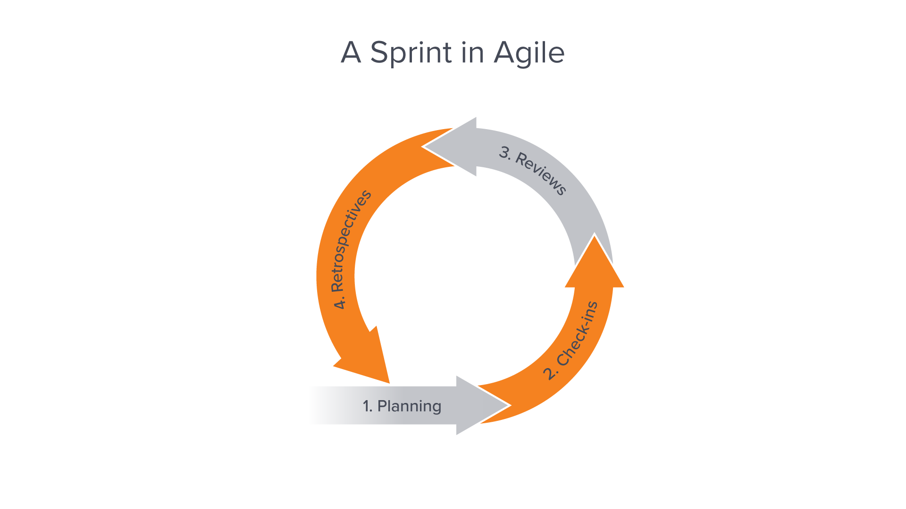

The design process is layed out like this:
1. Identify Problem
2. Brainstorm
3. Test
4. Communicate Results
5. Iterate
The hardest part of the process can be identifying the problem.
During the assembling of my ENEL 300 project, we ran into a lot of obstacles where a lot of times the source of the problem was not clear.
For example, when we were testing our microphone, we noticed that the length of wire between the breadboard and the microphone affected its sensitivity.
When we were first trying to debug this problem, we had no idea why the microphone was not picking anything up nor how to fix it.
After an extraneous brainstorming session, the problem was identified and corrected.
The most rewarding part of the process is when you've finally found the solution you've been trying to debug.
The solution to our wiring issue was just to have the microphone sit on the breadboard and that came with its own set of problems
like introducing noise which was also dealt with by adding filters to the circuit.
Agile project management was vey beneficial to my group.
The sprints made the project move quickly and smoothly with lots of iterations.
Making sure that the project was not planned in a way where one part could not start
until another was finished helped us immensely. This meant that we could all work on
separate parts and if we encountered a problem on one of the parts it did not stall the
entire project. Working with burndown charts and daily stand-ups made sure that we were
on top of schedule and made it easy for us to know how the rest of the team was doing
with their sections. I thought that utilising user personas is a very god idea because
it makes sure that you always keep in mind who you are designing for. I will use the
Agile sprint method in the future since my group and I had great success with it.

Transistor wafer. Source: https://www.workfront.com/project-management/methodologies/scrum/sprints
• I thought that the Agile workflow is the most important thing I learnt in this course. It made our work days be very efficient, made sure we finish on time, and always keeping
the customer in mind.